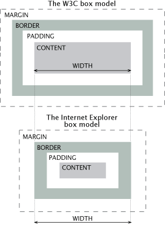

Estructura elemento HTML5
Estructura HTML
El texto se escribe en el contenedor de contenido, este contenedor de contenido se puede modificar con width y height.
La propiedad width establece el ancho de un elemento y la propiedad height establece la altura.
Fuera del contenedor del contenido encontramos el padding que este se puede modificar simultaneamente con padding o modificar un lado con padding-left/right/top/bottom
El border es el borde que separa el padding y el margin se puede modificar igual que el anterior
El margin es la ultima capa, este se modifica igual que los anteriores
Si tenemos dos contenedores uno encima del otro el margin con el mayor valor se sobrepone, por ejemplo, uno con 10 de margin y otro con 15 tendriamos en total solo un margin de 15 ya que el otro se sobrepasa
Estructura HTML en Internet Explorer
La diferencia apreciamos a simple vista es que en Internet Explorer se ve más pequeño
Esto se debe a que el width en vez de ocupar solo el contenedor de contenido ocupa hasta el border como podemos observar en la siguiente imagen

Propiedades CSS
width
Se utiliza para establecer el ancho de un elemento, sus parametros son auto|value|initial|inherit;
Nota: La propiedad width no incluye el relleno, bordes o márgenes; que define la anchura de la zona interior del relleno, borde y margen del elemento
max-width
Se utiliza para establecer la anchura máxima de un elemento, sus parametros son none|length|initial|inherit;
Nota: El valor de la propiedad max-width anula width.
height
Se utiliza para establecer la altura de un elemento, sus parametros son auto|length|initial|inherit;
Nota: La propiedad height no incluye el relleno, bordes o márgenes; que define la altura de la zona interior del relleno, borde y margen del elemento
max-height
Se utiliza para establecer la anchura máxima de un elemento, sus parametros son none|length|initial|inherit;
Nota: El valor de la propiedad max-height anula height.
display
Se utiliza para especificar el tipo de caja utilizada para un elemento HTML, sus parametros son none|inline|block|flex|initial|inherit;
overflow
Se utiliza para especificar qué ocurre si el contenido desborda la caja de un elemento, sus parametros son visible|hidden|scroll|auto|initial|inherit;
z-index
Se utiliza para especificar el orden de apilamiento de un elemento, sus parametros son auto|number|initial|inherit;
Nota: z-index sólo funciona en elementos posicionados (posición: absoluta, position: relative o position: fixed).
line-height
Se utiliza para especificar la altura de la línea, sus parametros son normal|number|length|initial|inherit;
Nota: Los valores negativos no están permitidos.
box-sizing
Se utiliza para decirle al navegador lo que las propiedades de tamaño (anchura y altura) deben incluir, sus valores son content-box|border-box|initial|inherit;